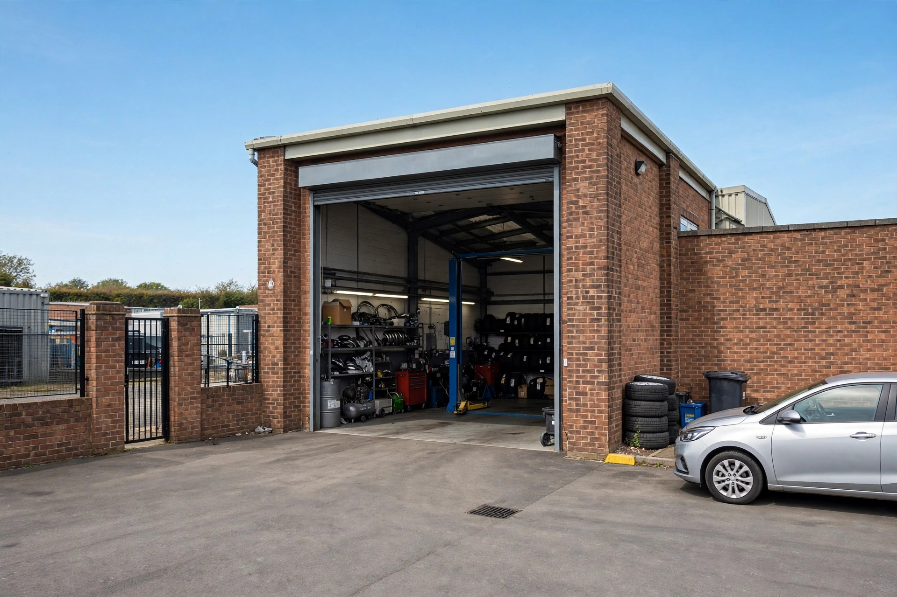
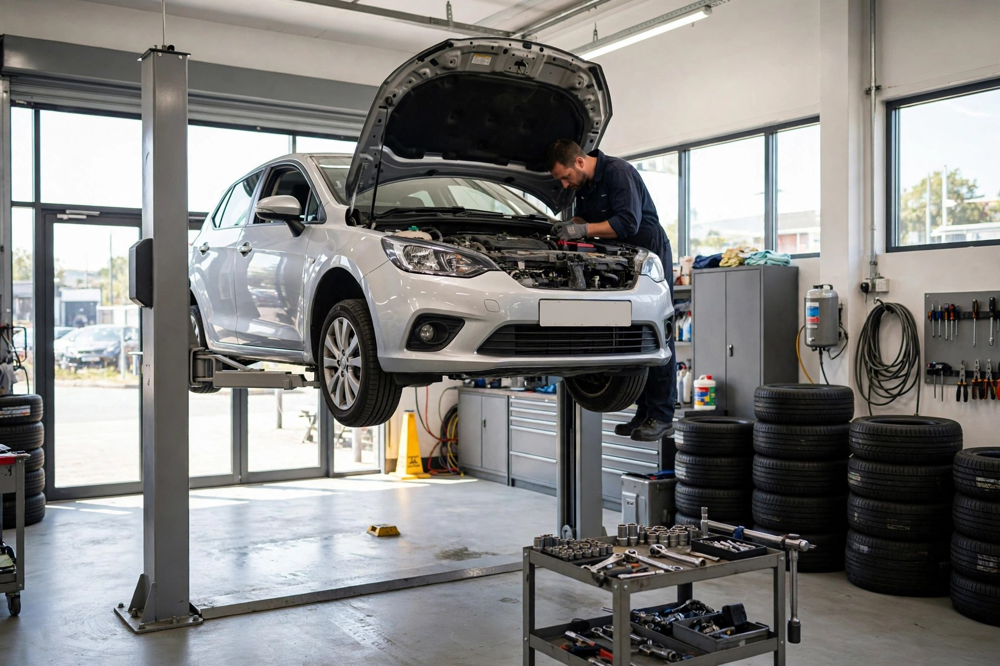
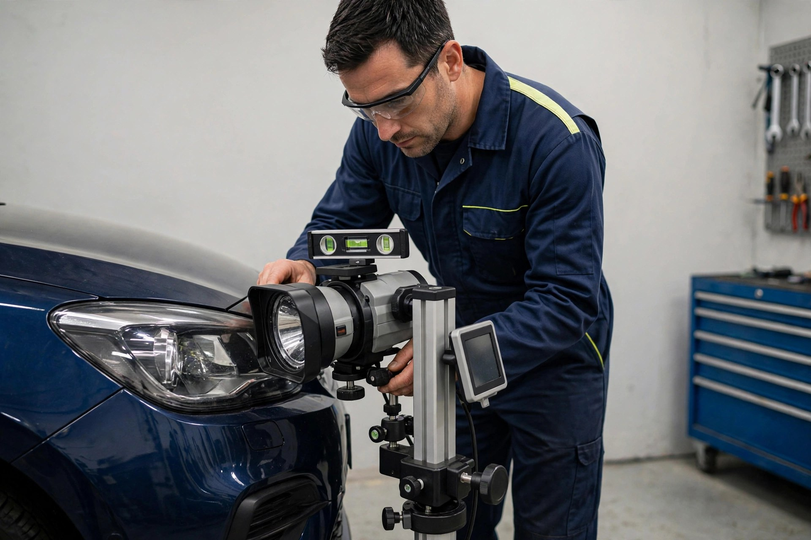
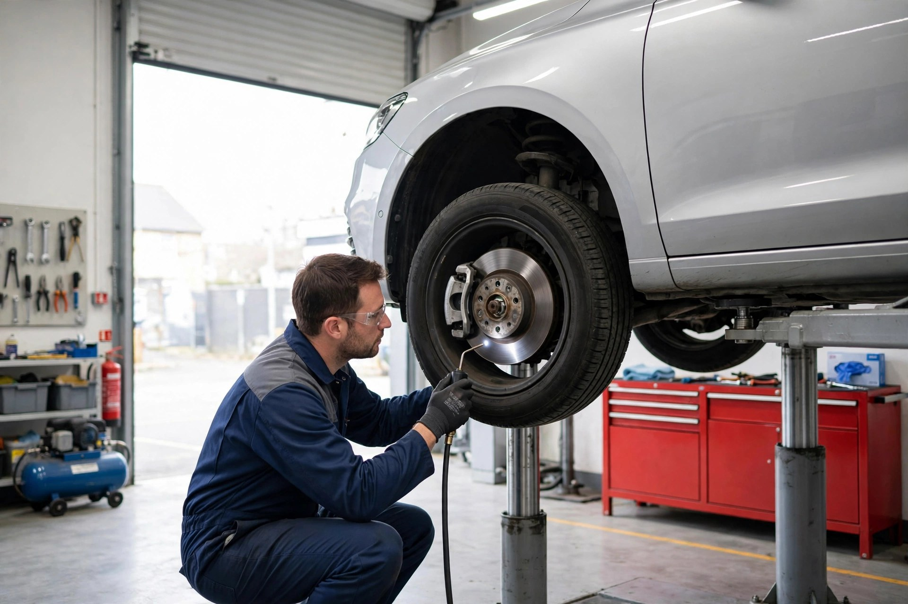

MOT Test
The full DVSA MOT inspection — brakes, lights, tyres, emissions, steering and more, checked to the letter.

Blackley, Manchester · MOT test centre
MOT testing for cars and vans by DVSA-registered testers — plus servicing and repairs to keep you safely on the road.
What we do
The full DVSA MOT inspection — brakes, lights, tyres, emissions, steering and more, checked to the letter.
A run-through of the common failure points before your test — so you pass the first time.
Routine servicing that keeps the car running sweet and the paperwork in order between MOTs.
Pads, discs and fluid inspected and replaced — braking is the first thing an MOT looks at, and us.
Exhaust faults and emission failures are common MOT fails — we diagnose and sort them here.
Lights, wipers, suspension, tyres — the everyday jobs that keep a car MOT-ready all year round.

Why choose us
We're a DVSA-registered MOT test centre in Blackley. No scare tactics, no upsells you don't need — just a proper inspection and straight answers.
The workshop


Come say hello
Good to know
Booking is recommended so we can fit you in at a time that suits you — call us on 0161 795 8739. You can present your vehicle up to a month before the current MOT expires without losing time on the certificate.
It checks the safety and roadworthiness of your vehicle: brakes, lights, tyres and wheels, steering, suspension, exhaust and emissions, seatbelts, windscreen and more.
You'll get a clear list of what failed. Many faults can be repaired here the same day, and you can then be issued a pass certificate.
Both. As well as MOT testing for cars and vans, we do servicing and general repairs — so most MOT failures can be fixed without you going anywhere else.
Get in touch